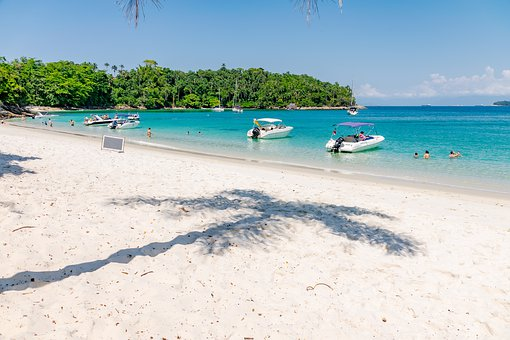

Quem não ama descobrir praias paradisíacas mundo afora? Ou relaxar e mergulhar em águas limpinhas e cristalinas? Mas, com o aumento da presença e ações humanas, muitas praias estão sofrendo com a poluição, lixo, riscos para a vida marinha e, claro, para nós também. Cuidar das praias é apenas uma parte do processo para ajudarmos a salvar nossos oceanos. Isso porque 80% do lixo que chega aos mares vem das cidades e percorre um longo curso até alcançá-los. Mas é um bom começo, e atitudes que nós, individualmente, podemos tomar imediatamente. Vamos fazer a nossa parte? Veja estas dicas abaixo. Elas valem tanto para o seu dia a dia, quanto para quando você estiver viajando. Você já é adepto delas? Que tal multiplicá-las?
lista de conscientização
- evite levar lanches em sacos plásticos
- leve um saco de lixo reciclável com você e jogue todo o lixo fora em local apropriado
- não custa nada também recolher, com segurança, um lixo ou outro que encontrar ao seu lado
- se você for dar uma caminhada, que tal otimizar seu exercício físico fazendo plogging e recolhendo mais lixo?
- tenha sempre com você uma garrafinha de água reutilizável. Evite as descartáveis.
- não jogue nada no mar e lugar de xixi é no banheiro!
- evite o cigarro. Ele é grande poluente de nossas praias. Se tiver muita necessidade de fumar, esteja preparado para descartá-lo de forma adequada
- ajude a fiscalizar seu barraqueiro. Ele está sendo responsável que nem você? Que tal dar umas dicas a ele?
- praticar atividades saudáveis e encorajar os amigos a multiplicar suas dicas também são ótimas pedidas!
Ao fazermos isso vemos a mudança em nossa fotos
Antes ↓
/i.s3.glbimg.com/v1/AUTH_59edd422c0c84a879bd37670ae4f538a/internal_photos/bs/2019/W/z/vBTWeITaqzVTVEfPgscw/lixo-praia.png)
Depois ↓
